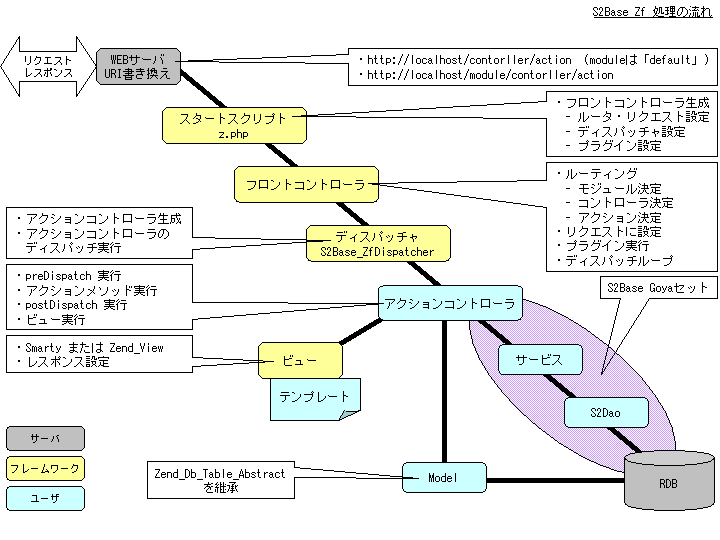

プロジェクトのディレクトリ構成
s2base コマンドに第二引数 zf を付けて実行すると、次のようなプロジェクトディレクトリが生成されます。 ディレクトリ構成としては s2base の基本構成 と同じです。
s2base.php5 プロジェクトディレクトリ
|-- app/
| +- commons/ ・・・ 共通モジュールディレクトリ
| +- modules/ ・・・ 本体モジュールディレクトリ
|-- config/
| +- environment.inc.php ・・・ S2Base 設定ファイル
|-- lib/
|-- public/ ・・・ WEB公開ディレクトリ
| +- .htaccess ・・・ Apache 用 .htaccess 設定ファイル
| +- z.php ・・・ S2Base_Zf スタートスクリプト
|-- test/ ・・・ テスト用ディレクトリ
|-- var/ ・・・ ログ・キャッシュディレクトリ
`-- vendor/
+- plugins/
+- zf/
+- config/
+- environment.inc.php ・・・ S2Base_Zf 設定ファイル
modules ディレクトリには、次のように、複数のモジュールディレクトリが module & controller コマンドによって生成されます。
モジュールディレクトリには、複数のコントローラとそのディレクトリ (以降、コントローラディレクトリ) が生成されます。
s2base.php5 プロジェクトディレクトリ |-- app/ | +- commons/ | +- modules/ | +- default/ ・・・ default モジュールディレクトリ | | +- IndexController.php ・・・ コントローラクラス | | +- index/ ・・・ コントローラディレクトリ | | +- index.inc.php ・・・ コントローラ共通設定ファイル | | +- action/ | | +- dao/ | | +- entity/ | | +- interceptor/ | | +- model/ | | +- service/ | | +- validate/ | | +- view/ | +- sample/ ・・・ sample モジュールディレクトリ | | +- IndexController.php ・・・ コントローラクラス | | +- index/ ・・・ コントローラディレクトリ | | +- ・・・
Zend_Controller との連携
処理の流れ
{kind=link}
拡張ポイント
S2Base_Zf では上図にあるように、ディスパッチャとビューをカスタマイズしています。 また、Zend_Controller のプラグインの機能を用いてリクエストバリデーションのサポートプラグインを組み込んでいます。
-
S2Base_ZfDispatcher
Zend_Controller_Dispatcher_Standard を継承したディスパッチャクラスです。dispatchメソッドをオーバーライドしており、アクションコントローラの生成に S2Container を使用します。 - S2Base_ZfValidateSupportPlugin
dispatchLoopStartup メソッドで、リクエスト検証を行います。 - ViewRenderer
- S2Base_ZfSmartyViewRenderer
Zend_Controller_Action_Helper_Abstract を継承し、ビューに Smarty を用います。デフォルトで使用されます。 - S2Base_ZfStandardViewRenderer
Zend_Controller_Action_Helper_ViewRenderer を継承して、いくつかの機能を追加したビューレンダークラスです。ViewRendererの選択を参照下さい。
- S2Base_ZfSmartyViewRenderer
スタートスクリプト z.php
WEBサーバのURI書き換え機能により最初にスタートスクリプト z.php が実行されます。 z.php では、Zend_Controller を起動するための初期設定を行います。
s2base.php/public/z.php
・・・
try {
Zend_Session::regenerateId();
S2Base_ZfInitialize::init();
Zend_Controller_Front::getInstance()->dispatch();
} catch(Exception $e) {
・・・
S2Base_ZfInitialize クラスは、s2base.php5/vendor/plugins/zf/config/environment.inc.php で定義しています。リクエストやプラグインの設定はこのクラスで行います。
Smarty ビューの使用
S2Base_Zf では、ビューのインスタンスはアクションコントローラの view プロパティに設定されています。デフォルトでは、ビューに Smarty を使用します。 ビューに使用するクラスの切り替えについては、「ViewRendererの選択」を参照下さい。
テンプレートファイルの設定
上記のように、デフォルトではアクション名のテンプレートファイルが使用されます。任意のテンプレートファイルを使用する場合は、アクションヘルパー( S2Base_ZfSmartyViewRenderer )で設定します。
class IndexController extends Zend_Controller_Action {
・・・
public function indexAction (){
$this->view->assign('message', 'Hello World');
$this->_helper->viewRenderer('top'); <-- テンプレートファイルは top.html
}
・・・
}
レイアウトの設定
レイアウトファイルの設定は、S2BASE_PHP5_LAYOUT 定数を定義するか、アクションヘルパー( S2Base_ZfSmartyViewRenderer )の setLayout メソッドを用いて直接設定します。レイアウトが設定されている場合は、$content_for_layout 変数に元のアクション用テンプレートファイルが設定されます。
define('S2BASE_PHP5_LAYOUT', 'file:' . S2BASE_PHP5_ROOT . '/app/commons/view/right_menu_layout.html');
class IndexController extends Zend_Controller_Action {
・・・
public function rightMenuAction (){
$this->view->assign('message', 'Hello World'); <-- 右メニューレイアウトで表示
}
public function leftMenuAction (){
$this->view->assign('message', 'Hello World'); <-- 左メニューレイアウトで表示
$this->_helper->setLayout('file:' . S2BASE_PHP5_ROOT . '/app/commons/view/left_menu_layout.html');
}
・・・
}
Zend_Db のセットアップ
S2Base_Zf では、model コマンドで、Zend_Db_Table_Abstract を継承したモデルクラスを生成します。データベースアダプタの設定は、S2Base_ZfDb::setDefaultPdoAdapter メソッドで、デフォルトのデータベースアダプタを設定します。S2Base_ZfDb::setDefaultPdoAdapter メソッド は、vendor/plugins/zf/config/environment.inc.php ファイルで実行されます。また、DSN 値は、pdo.dicon の dataSrouce コンポーネントに設定されている値が使用されます。
設定ファイル
リクエストごとに次の4つのファイルが設定ファイルとして使用されます。4番目のアクション固有の設定ファイル以外は必ず読み込まれます。(必須)
- config/environment.inc.php
S2Base 共通の設定ファイル。読み込まれるタイミングは、フロントコントローラが生成される前です。一番最初に読み込まれます。 - vendor/plugins/zf/config/environment.inc.php
S2Base_Zf 固有設定ファイル。読み込まれるタイミングは、上記 config/environment.inc.php のすぐあとで、フロントコントローラが生成される前です。 - コントローラディレクトリ/コントローラ名.inc.php
コントローラ共通設定ファイル。読み込まれるタイミングは、アクションコントローラが生成される直前です。 - コントローラディレクトリ/アクションメソッド名.inc.php
アクション固有設定ファイル。読み込まれるタイミングは、上記コントローラ共通設定ファイルが読み込まれた直後で、アクションコントローラが生成される前です。 この設定ファイルは存在すれば読み込まれます。(任意)
ViewRendererの選択
S2Base_Zf は、デフォルトではビューに Smarty を用いる S2Base_ZfSmartyViewRenderer を使用します。Zend_View を使用する場合は次の environment.inc.php で、S2BASE_PHP5_USE_SMARTY定数に false を設定します。
s2base.php5/vendor/plugins/zf/config/environment.inc.php
<?php
・・・
/**
* Smarty 設定
*/
define('S2BASE_PHP5_USE_SMARTY', true);
・・・
?>
リクエストの検証
設定ファイル
リクエストのバリデーションを行う設定ファイルは、action コマンドや goya コマンドを実施した際に、コントローラディレクトリの validate ディレクトリに 「 アクション名.ini 」として生成されています。設定ファイルは、Zend_Config_Ini クラスを用いて読み込まれます。
設定ファイルの例
[default] <--- 共通設定用セクション
action = "error"
[id : default] <--- 各リクエストパラメータ用セクション
validate = "int,regex" <--- 検証タイプをカンマ区切りで指定
regex.pattern = "/^\d{1,8}$/" <--- 検証タイプ名をprefixとして各検証タイプに必要な項目を設定
[name : default]
validate = "alnum"
alnum.msg = "invalid name"
default セクションは共通設定用のセクションです。default セクション以外のセクションは、各リクエストパラメータ用のセクションになり、セクション名にリクエストパラメータ名を使用します。また、defaul セクションを継承します。
検証タイプ
デフォルトで用意されている検証タイプは次になります。それぞれ、Zend_Validate_*** クラスが使用されます。
| 検証タイプ | 検証クラス | 設定項目 | |
|---|---|---|---|
| alnum | Zend_Validate_Alnum | alnum.msg | 検証が失敗した場合のメッセージ |
| alpha | Zend_Validate_Alpha | alpha.msg | 検証が失敗した場合のメッセージ |
| date | Zend_Validate_Date | date.msg | 検証が失敗した場合のメッセージ |
| float | Zend_Validate_Float | float.msg | 検証が失敗した場合のメッセージ |
| int | Zend_Validate_Int | int.msg | 検証が失敗した場合のメッセージ |
| ip | Zend_Validate_Ip | ip.msg | 検証が失敗した場合のメッセージ |
| regex | Zend_Validate_Regex | regex.msg regex.pattern | 検証が失敗した場合のメッセージ 検証に使用するパターン |
エラーの検知
リクエストの検証を追加した後に、アクションメソッド内でリクエスト検証で問題が発生したかどうかを確認する場合は、S2Base_ZfValidateSupportPluginクラスの hasError メソッド、getErrors メソッドが使用できます。
public static function hasError(Zend_Controller_Request_Abstract $request, $paramName = null);
リクエストのインスタンスを引数にとります。$paramName が指定されている場合は、そのリクエストパラメータで問題が発生したかどうかをしらべます。
public static function getErrors(Zend_Controller_Request_Abstract $request, $paramName = null);
リクエストのインスタンスを引数にとります。$paramName が指定されている場合は、そのリクエストパラメータで発生した検証エラー情報を返します。検証エラーの情報は次のような配列で取得します。( getErrors メソッドの戻り値 )
配列[パラメータ名] = 配列('value' => リクエスト値,
'msg' => エラーメッセージ,
'pre_mod' => 元のモジュール名,
'pre_ctl' => 元のコントローラ名,
'pre_act' => 元のアクション名);
ビューでの表示
S2Base_ZfSmartyView と S2Base_ZfStandardView では、$errors['validate'] 変数に検証エラーが保存されています。次のようにテンプレート内で使用できます。
<font color="red">
{foreach from=$errors.validate item=val key=key}
{$key|escape} : {$val.msg|escape}
{/foreach}
</font>
カスタムバリデーションを使用する
独自の検証タイプを用意する場合は次の2つのクラスを作成し、スタートスクリプト( z.php )で S2Base_ZfValidateSupportPlugin に登録します。
・ Zend_Validate_Interface を実装するクラス・ S2Base_ZfValidateFactory を実装するクラス
S2Base_ZfValidateFactory を実装するクラスは、getId メソッドと getInstance メソッドを実装します。 getInstance メソッドは、検証設定ファイルの情報 ( Zend_Config ) を引数にとり、その情報を用いて検証クラスを生成します。
検証タイプ regex の場合
デフォルトで用意されている検証タイプ regex は、カスタムバリデーションとして実装されています。- Zend_Validate_Interface を実装するクラス : Zend_Validate_Regex
- S2Base_ZfValidateFactory を実装するクラス : S2Base_ZfRegexValidateFactory
- 検証設定ファイルのフォーマット
・・・ [id : default] validate = "regex" regex.msg = "regex validate error." regex.pattern = "/\w+/s" ・・・
- スタートスクリプト z.php で登録
・・・ // リクエストバリデーションをサポートするプラグインを登録 // Zend_Validate_Regex を使用するカスタムバリデーションを追加しています。 $validatePlugin = new S2Base_ZfValidateSupportPlugin(); $validatePlugin->addValidateFactory(new S2Base_ZfRegexValidateFactory()); $fc->registerPlugin($validatePlugin); ・・・
S2Base_Zf の留意点
- モジュール名には、[_a-zA-Z0-9] が使用できます。モジュール名は [a-zA-Z] で始まる必要があります。
- コントローラ名には、[a-zA-Z0-9] が使用できます。
- アクション名には、[_a-zA-Z0-9.-] が使用できます。
-
コントローラクラスの継承について
実行されるアクションメソッドが実装されているコントローラクラスに関わらす、コントローラディレクトリは、リクエストされたコントローラ名になります。